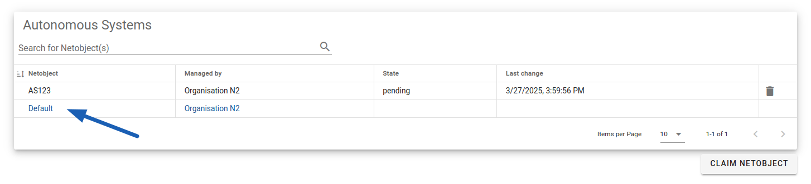
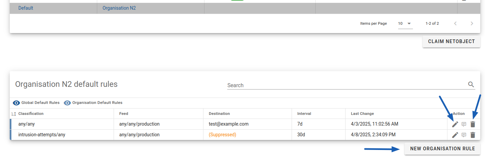
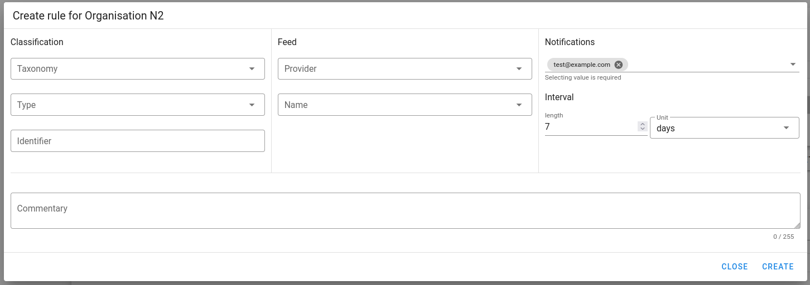
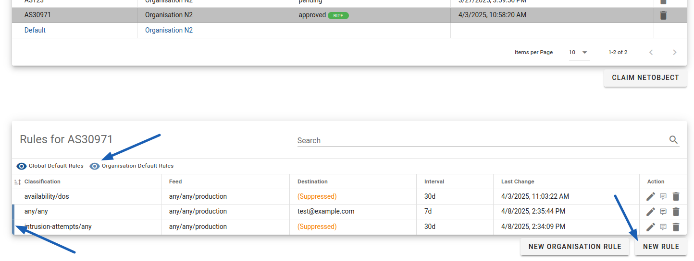
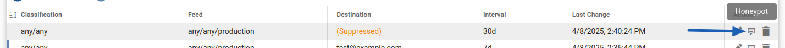
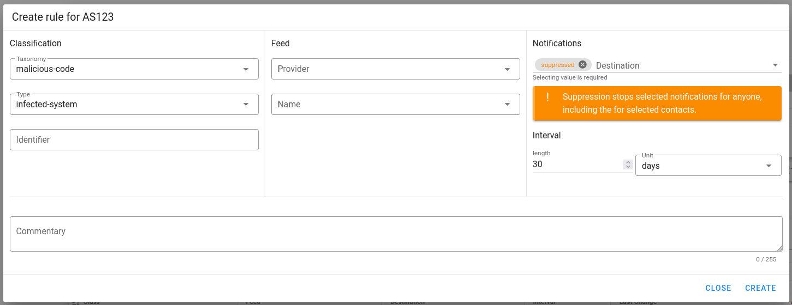
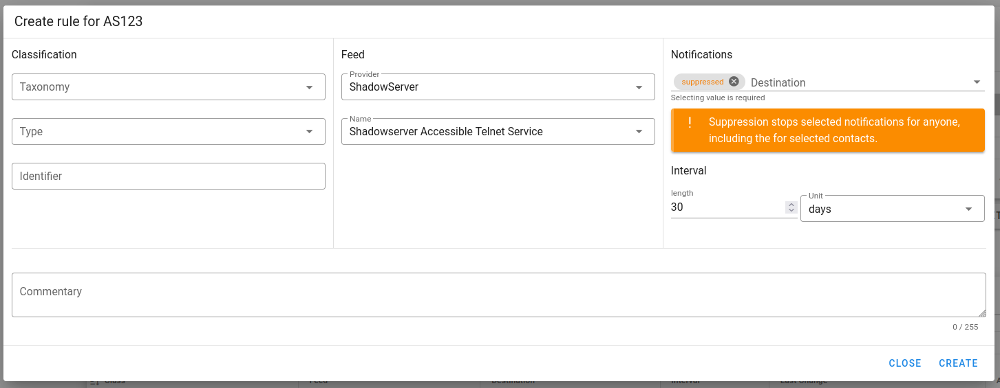
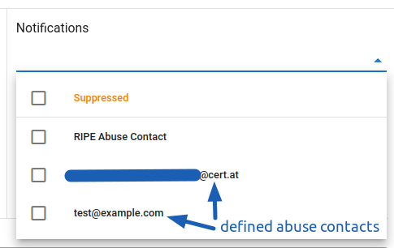
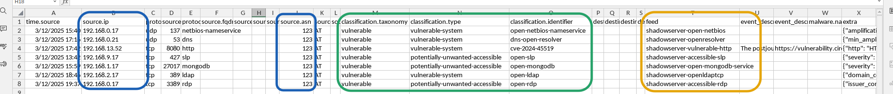

Managing Notification Rules¶
With approved netobjects, you can manage our notifications. For any IP range, AS number, or for the whole organisation, you can:
- disable notifications of a given type, from a given source, or of a specific identifier
- select provided contact e-mail addresses
- select how often we should repeat a notification
When and who do we notify?¶
Most of our sources do their checks once a day and send us reports with the current state. We then process the data, apply our filters, possibly enrich with additional information, and find the contact information based on the affected IP. By default, we use abuse contacts from the RIPE database.
We will see regular reports on the same issue every day until it's solved. To prevent the sending of unnecessary emails, we apply a few rules on how often we can repeat the same information. By default, for a given IP, we will repeat a notification:
- if it still exists after 7 days - for notifications about already compromised systems
- if it still exists after 30 days - in other cases
Finally, we send out emails with notifications grouped in bulk, once a day (excluding oneshots).
Recommended Priority Feeds
We recommend you at minimum pay significant attention to data from the following feeds:
- CERT.at One-Shot - notifications generated manually by our team for emerging issues
- ShadowServer Compromised Website Report - information about compromised HTTP(S) services, including e.g. firewall web management interfaces
- ShadowServer Compromised IoT Device Report - information about compromised IoT or OT devices connected to Internet
- Shadowserver Vulnerable HTTP - warnings about detected critical vulnerabilities in HTTP(S) services, including e.g. firewall web management interfaces, mail web servers and SSL-VPN gateways
Feeds Limitations, CERT.at Warnings and Newsletters
In this service, we inform you about events related to your network assets that are accessible online and can be remotely analysed by our partners. This is not a comprehensive vulnerability assessment nor a stream with all reported vulnerabilities. While we and our partners do our best, some false positives are also possible. If you have questions about notifications you have recieved, please see Emails von uns (DE) and don't hesitate to contact us at team@cert.at
We also recommend you subscribe to our newsletters:
Creating default organisation rules¶
You can use organisation rules to suppress some notifications for the whole organisation, change the default abuse contact or the default repeating interval.
To create a rule, please go to any netobject management page, e.g. Autonomous Systems. Click on the Default below your listed assets:

Default row is available on every netobject pageThis will load a table with your current default rules.

Table with current rules will be below the assets listOn the right side, you can edit or delete a rule. Under the table you have a New organisation rule button. Click on it to create a rule. You will see a popup as follows:

New rule popupHere you can configure the rule. In the example above, the default abuse contact address and a shorter notification repeating interval have been set. Note that as the notification destination you can use any already defined contact with the Abuse contact role.
In the section below you can find an explanation for the available configuration.
Notice
The rule is active from the moment you save it. However, because we may have already prepared some data to send to you, you may notice some notifications using the old configuration the day after creating or editing a rule.
Creating notification rule for a netobject¶
If you want to manage notifications for a specific IP address, range or AS, you need to first create the right netobject, and then click on it to load all affecting rules.
You will then see rules for the object as well as organisation rules - marked by a colour border on the left side which can be hidden by clicking on the eye icon. By clicking on the New rule button, you can create a new rule for only the selected netobject. This process is the same as for organisation rules.

Rules for an objectRule configuration explained¶
The rule configuration has three main parts:
- Classification
- Feed
- Notifications
You don't have to fill all fields, the empty fields will match any valid value. In addition, the comment field is provided for your convenience - you can use it to note the justification for the rule, so one can understand it later.

You can see the comment by hovering the icon on the rule listClassification¶
We follow the taxonomy from Reference Security Incident Taxonomy Working Group to categorize our events. This is a two-level (referred as taxonomy and type) hierarchical structure that categorize incidents in a standardize way. This let you easily manage similar events. Please refer to taxonomy page for the list of available options.
The third field in the column is identifier. This refers to the specific kind of an event. For example, it could be a CVE number for vulnerabilities, malware family name for infections and mnemonic identifying the software for reports about potentially unwanted public available services. There is no list of all identifiers as they are partially dynamically generated. You can use it to filter out specific events without disabling the whole category.

Example configuration to suppress notifications about infected hosts in an ASFeed¶
The Feed section let you manage notifications based from whom we get it. You can select Provider (e.g. The ShadowServer Foundation) and then the very specific Feed. Feeds usually (but not always) provide one kind of events, e.g. open Docker API, vulnerable systems or malware infections.

Example configuration to suppress notifications from a feed with open telnet instancesNotice
The list may not reflect all currently used feeds, especially there may be some previously used that are not active anymore. In addition, some partners may require from us not to disclose their identity.
Tip
We describe feeds on our website (DE), categorized by the taxonomy.
Notifications¶
In this section, you can manage who should be notified and how often should we repeat a notification (in case the given problem still exists). As destination, you can choose one or more from:
- Suppressed - we will stop informing you about matching events,
- RIPE Abuse Contact - this will keep informing the abuse contact from RIPE database,
- any contact with Abuse contact role defined for your organisation - see managing contacts.

Available destinationsIf you suppress notifications, we will ignore any defined destinations and won't sent it to anyone. Note that if you don't select RIPE Abuse Contact, we will not use the RIPE abuse contact anymore for matching events.
Tip
We recommend managing filters on your own. If you need a more complex filtering than available in the Portal, you can contact us at team@cert.at and we will handle it for you.
Finding information for a rule in notifications¶
The most common scenario is that you want to suppress some specific event that is a false positive for your system, e.g. an intentionally open DNS resolver. You should get an e-mail notification from us with a CSV file containing information as follows:

CSV with marked columns useful for creating a ruleYou can use information marked with colours:
- blue - to create a netobject
- green - to filter based on classification
- orange - to filter based on feed
Assuming the DNS resolver listed in line 3 is intentionally open, you can simply create an exclusion to prevent further notifications:
- Create a netobject for
192.168.0.21/32and start creating a corresponding rule. - For filtering, use:
- identifier set to dns-open-resolver (you don't have to fill taxonomy nor type) OR
- select the feed provider ShadowServer and the feed Shadowserver DNS Open Resolver
- As destination, select Suppressed
Tip
More about the CSV format you can read on our website (DE)